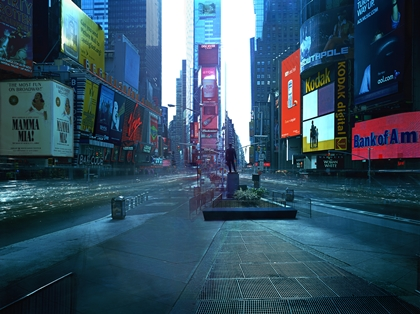

공간 안의 선 구성 No. 2
나움 가보 | 1949
플라스틱, 나일론 줄
오쇠리 풍경 6
강홍구 | 2004
디지털 사진
작품 86-KR
곽인식 | 1986
캔버스에 붙인 종이에 수묵
비비디
권오상 | 2009
C-프린트, 혼합재료
무제 (마크 그로찬 위에 검은 나비)
마크 그로찬 | 2004
린넨에 유채
깊은 밤 (스코히건)
바이런 김 | 1997
마포 위에 비닐 도료
녹음방초
김종학 | 1998
캔버스에 유채
고독
이사무 노구치 | 1962
청동, 검정색 파티나
추상회화 No. 34
애드 라인하르트 | 1964
캔버스에 유채
와일드 스트로베리 이클립스 (어반 버번)
로버트 라우셴버그 | 1988
아연 도금 금속판에 아크릴과 에나멜 물감
형성
시프리앙 가이야르 | 2021/2025
비디오, 컬러, 무음
전시중
무제(로스앤젤레스 I),
무제(로스앤젤레스 IV) (일부)
프랑크 게리 | 2012-2013
철사, 플라스틱 라미네이트(컬러코어), 실리콘
숨 6 (아버지)
구본창 | 1995
젤라틴 실버 프린트
캄보드
권오상 | 2007-2008
C-프린트, 혼합재료
산사(山寺)
김기창 | 1980년대 후반
종이에 수묵담채
뮤지엄 프로젝트 #149, #038
김아타 | 2000
시바크롬 프린트
탄탄보: 감은 눈으로도 볼 수 있는 불꽃과의 조우
무라카미 다카시 | 2013-14
보드 위 캔버스에 아크릴 물감
층계참
토마스 데만트 | 2006
C-프린트
리포트
로버트 라이먼 | 1983
유리 섬유판에 유채와 에나멜, 알루미늄 고정장치
무제
강석호 | 2005
캔버스에 유채
전시중
평양 III
안드레아스 구르스키 | 2007
C-프린트
평양 III
안드레아스 구르스키 | 2007
C-프린트
열둘
길버트 & 조지 | 2005
젤라틴 실버 프린트
w.pl-03, w.pl-66
김도균 | 2011
C-프린트, 플렉시글라스에 나무 프레임

온에어 프로젝트 110-2: 타임 스퀘어, 뉴욕시리즈
김아타 | 2005
C-프린트
작품 19-Ⅷ-72 #229
김환기 | 1972
캔버스에 유채
젤리피쉬 아이즈-사키
무라카미 다카시 | 2004
혼합재료

풍경
장 뒤뷔페 | 1953
메소나이트 위에 오트 파트와 유채
비행사
페르낭 레제 | 1920
캔버스에 유채
영어를 배우자
강익중 | 1991-1996
목판에 부조

정물
구본웅 | 1937
캔버스에 유채
무제(도시락통)
수보드 굽타 | 2010
대리석, 카펫
고려청자유약 #1
바이런 김 | 1995-96
마포에 유채
토요일 밤
김인숙 | 2007
C-프린트
새벽의 존재 – 셋
루이즈 네벨슨 | 1975
나무에 흰색 페인트
무제
김홍주 | 1993
캔버스에 유채
여우 바퀴 Ⅱ, 세 면의 피라미드
브루스 노만 | 1989
포토 콜라주
우주 코끼리
살바도르 달리 | 1980
청동, 수지
장소도 시간도 실체도 없는
볼프강 라이프 | 2003
밀랍, 나무
작품 86, M.K
곽인식 | 1986
캔버스, 종이에 채색
숨 3 (물고기)
구본창 | 1995
젤라틴 실버 프린트
미래의 기억들
로랑 그라소 | 2010
네온튜브(19글자)
고려 청자 유약 #2
바이런 김 | 1996
캔버스에 유채

비닐봉지
김홍석 | 2011
청동
물방울
김창열 | 1981
캔버스에 유채와 먹
독순가(讀脣家)를 위하여
노상균 | 1996
캔버스에 시퀸
동굴
토마스 데만트 | 2006
C-프린트, 디아섹
아홉
리처드 디콘 | 1997
증기 가공한 너도밤나무
붉은 색 위에 흰색
마크 로스코 | 1956
캔버스에 유채
고뇌를 위한 습작
아쉴 고르키 | 1947
캔버스에 유채
무제
권영우 | 1984
한지에 과슈, 먹
슬라이스
댄 그레이엄 | 2013
양방향 거울, 스테인리스 스틸
바늘여인-도쿄, 상하이, 델리, 뉴욕
김수자 | 1999-2000
4채널 영상 프로젝션

지-수-화-풍
김수자 | 2009-2010
4개 싱글 채널 비디오
기울고 과장된 구성에 대한 연구-ACT 김홍석 | 2010 합성수지
작품3-XI-69 #130 김환기 | 1969 캔버스에 유채
한국 달력 한네 다보벤 | 1991 콜라주: 옵셋 인쇄 일력, 펠트 펜
워터 블록 요시오카 도쿠진 | 2012 유리, 스테인리스 스틸
칼레의 시민 오귀스트 로댕 | 1884–1895 청동
무제 안젤름 라일 | 2008 캔버스에 혼합 매체, 아크릴글라스